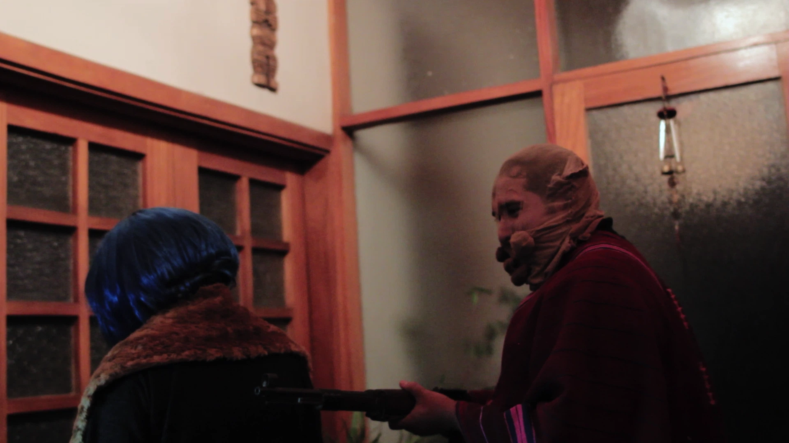
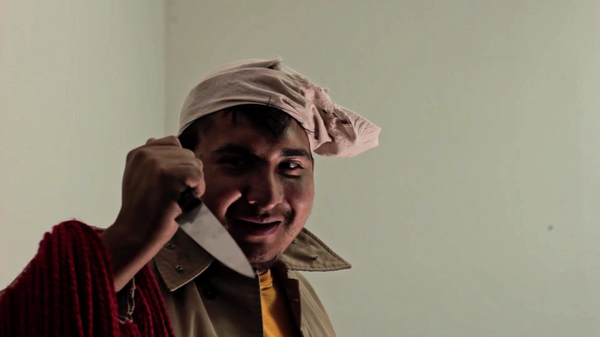
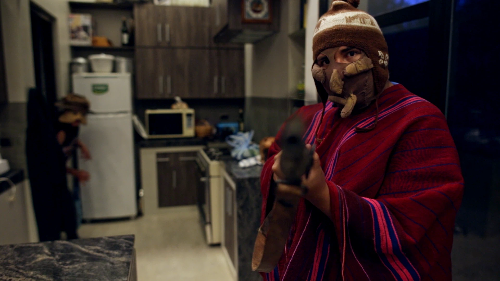
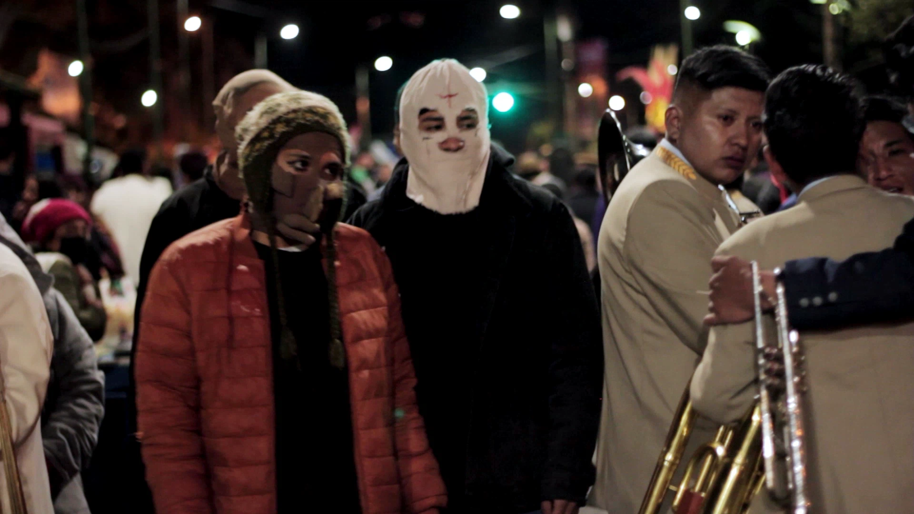
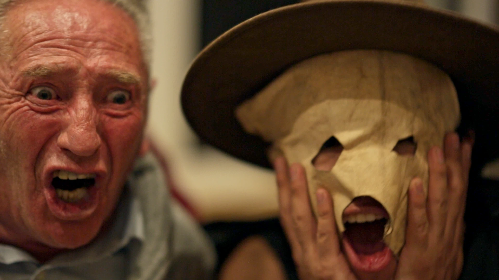
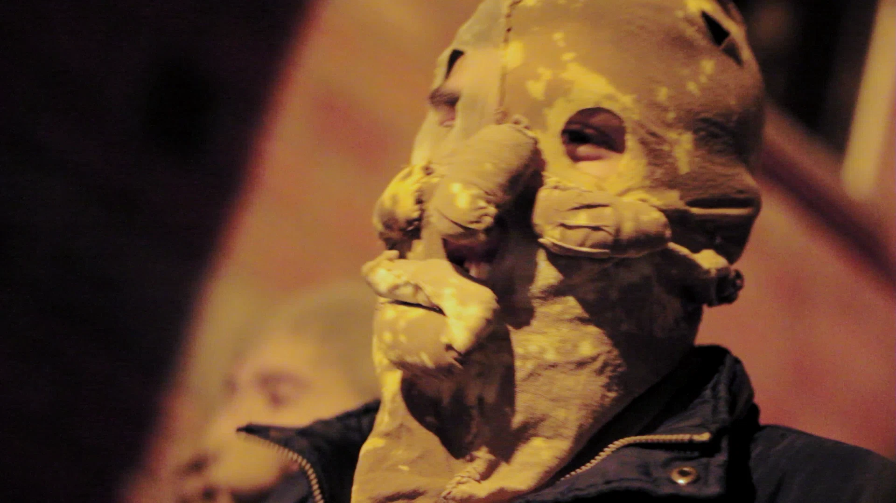

Videos
Próximamente Trailer 2
Fotos






SINOPSIS
LA PAZ, BOLIVIA, AÑO 2049.
LAS COSAS SON MUY SIMILARES, PERO UN POCO MÁS CAÓTICAS, Y TODO POR CULPA DE ESTOS MALDITOS JÓVENES QUE NO RESPETAN A SUS VIEJOS. MALDITOS, MALDITOS TIEMPOS QUE NOS HA TOCADO VIDIR.
DE ALGUNA FORMA SE HAN SOLUCIONADO LAS CRISIS QUE AQUEJABAN AL PAÍS. PERO SIGUEN SUELTOS LOS LLUNK'US: LOS FUNCIONARIOS DE CIVIL SEMBRANDO EL CAOS. Y SIGUEN SUELTOS A PESAR DE QUE YA NO RESPETAN NI A SUS PROPIOS SUPERIORES, Y SON Más BIEN KUSILLOS SANGUINARIOS.
LA PELÍCULA LLUNK'US! SIGUE LAS EXPERIENCIAS DE UN GRUPO DE JÓVENES QUE SE DEDICAN A DEAMBULAR EN LAS NOCHES DEL FUTURO GENERANDO ZOZOBRA ENTRE LA POBLACIÓN EMBORRACHADA: CUATRO COLEGIALES QUE PUEDEN DISFRAZARSE TANTO DE RACISTAS SANGUINARIOS DEL KKK COMO DE COMUNARIES INDÍGENES, SOLO PARA BURLARSE DE LOS TERRORES COLECTIVOS DE LOS CIUDADANOS.
LA PELÍCULA LLUNK'US ES ADEMÁS UNA REVERSIÓN DE LA NOVELA UNA NARANJA MECÁNICA DEL AUTOR ANTHONY BURGESS, AUNQUE ES UNA VERSIÓN MUY DISTINTA DE DISTINTAS ADAPTACIONES QUE SE HICIERON, PUES SU CONTEXTO ES LA FIESTA DE HALLOWEEN FOLKLÓRICO, DONDE LAS CRIATURAS DE LA DIABLADA SE HAN MEZCLADO CON LOS PERSONAJES DE LAS PELÍCULAS DE TERROR.
LA PELÍCULA LLUNK'US ES UNA EXPERIENCIA AUDIOVISUAL QUE EXPLORA UNA CIUDAD FUTURISTA DECADENTE Y SIEMPRE CHISTOSA, SIEMPRE IRÓNICA. UNA CIUDAD TOMADA POR UN ESTADO PARAMILITARIZADO, TODA BULLENTE DE MÁSCARAS, TODA CONSUMIBLE, TODA DESACRABLE.
FINALMENTE, LLUNK'US!, COMO DISPOSITIVO, ES UNA CELEBRACIÓN ALUCINADA DE LOS BROTES DE FUTURO QUE HABITAN EN NUESTRO ACTUAL CAOS. Y ES UNA HISTORIA DE AMIGOS CON LAS FEROMONAS A FLOR DE PIEL.
CITAS CRÍTICAS
"ESE FUTURO PARECE DEL PASADO"
"DOPAMINA, DOPAMINA, DOPAMINA... OH ASBESTOS!"
"LA INFINITA GRACIA DEL BOLIVIANO PROMEDIO EN EL FUTURISMO DE NUESTRAS CIUDADES DE PIEDRA"
"EL CEMENTERIO DE ELEFANTES PARA JOVENCITAS EN TUSSI"
"QUIÉN DIRÍA QUE LAS PERRAS TIENEN OPINIONES POLÍTICAS?"
"ALCOHOL CAIMÁN CON CHICOLAC: EL BAILEYS ANDINO. UNA DE LAS RECETAS QUE ME LLEVO DE ESTA PELÍCULA."
"NUNCA SER UN LLUNK'U DEL OFICIALISMO SE HA VISTO MÁS COOL, YA QUISIERA SER YO FUERZA BRUTA DEL FUTURO. ESTOS ESTÁN GLORIFICANDO AL LUMPENPROLETARIADO".
"¡CANCELEN LLUNK'US! ¡POR FAVOR! ¡ES UNA ABERRACIÓN!"